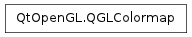

QGLColormap ¶

Synopsis ¶
Functions ¶
- def detach_helper ()
- def entryColor (idx)
- def entryRgb (idx)
- def find (color)
- def findNearest (color)
- def handle ()
- def isEmpty ()
- def setEntries (count, colors[, base=0])
- def setEntry (idx, color)
- def setEntry (idx, color)
- def setHandle (ahandle)
- def size ()
Detailed Description ¶
The PySide.QtOpenGL.QGLColormap class is used for installing custom colormaps into a PySide.QtOpenGL.QGLWidget .
PySide.QtOpenGL.QGLColormap provides a platform independent way of specifying and installing indexed colormaps for a PySide.QtOpenGL.QGLWidget . PySide.QtOpenGL.QGLColormap is especially useful when using the OpenGL color-index mode.
Under X11 you must use an X server that supports either a PseudoColor or DirectColor visual class. If your X server currently only provides a GrayScale , TrueColor , StaticColor or StaticGray visual, you will not be able to allocate colorcells for writing. If this is the case, try setting your X server to 8 bit mode. It should then provide you with at least a PseudoColor visual. Note that you may experience colormap flashing if your X server is running in 8 bit mode.
The PySide.QtOpenGL.QGLColormap.size() of the colormap is always set to 256 colors. Note that under Windows you can also install colormaps in child widgets.
This class uses implicit sharing as a memory and speed optimization.
Example of use:
import sys from PySide.QtGui import QApplication , qRgb from PySide.QtOpenGL import QGLColormap def main ( argv ): app = QApplication ( argv ) widget = MySuperGLWidget () # a QGLWidget in color-index mode colormap = QGLColormap () # This will fill the colormap with colors ranging from # black to white. for i in range ( 0 , colormap . size ()): colormap . setEntry ( i , qRgb ( i , i , i )) widget . setColormap ( colormap ) widget . show () return app . exec_ () if __name__ == "__main__" : main ( sys . argv )
- class PySide.QtOpenGL. QGLColormap ¶
- class PySide.QtOpenGL. QGLColormap ( arg__1 )
-
Parameters: arg__1 – PySide.QtOpenGL.QGLColormap Construct a PySide.QtOpenGL.QGLColormap .
Construct a shallow copy of map .
- PySide.QtOpenGL.QGLColormap. detach_helper ( ) ¶
- PySide.QtOpenGL.QGLColormap. entryColor ( idx ) ¶
-
Parameters: idx – PySide.QtCore.int Return type: PySide.QtGui.QColor Returns the QRgb value in the colorcell with index idx .
- PySide.QtOpenGL.QGLColormap. entryRgb ( idx ) ¶
-
Parameters: idx – PySide.QtCore.int Return type: long Returns the QRgb value in the colorcell with index idx .
- PySide.QtOpenGL.QGLColormap. find ( color ) ¶
-
Parameters: color – long Return type: PySide.QtCore.int
- PySide.QtOpenGL.QGLColormap. findNearest ( color ) ¶
-
Parameters: color – long Return type: PySide.QtCore.int
- PySide.QtOpenGL.QGLColormap. handle ( ) ¶
-
Return type: PySide.QtCore.Qt::HANDLE Returns the handle for this color map.
- PySide.QtOpenGL.QGLColormap. isEmpty ( ) ¶
-
Return type: PySide.QtCore.bool Returns true if the colormap is empty or it is not in use by a PySide.QtOpenGL.QGLWidget ; otherwise returns false.
A colormap with no color values set is considered to be empty. For historical reasons, a colormap that has color values set but which is not in use by a PySide.QtOpenGL.QGLWidget is also considered empty.
Compare PySide.QtOpenGL.QGLColormap.size() with zero to determine if the colormap is empty regardless of whether it is in use by a PySide.QtOpenGL.QGLWidget or not.
See also
- PySide.QtOpenGL.QGLColormap. setEntries ( count , colors [ , base=0 ] ) ¶
-
Parameters: - count – PySide.QtCore.int
- colors – long
- base – PySide.QtCore.int
- PySide.QtOpenGL.QGLColormap. setEntry ( idx , color ) ¶
-
Parameters: - idx – PySide.QtCore.int
- color – long
- PySide.QtOpenGL.QGLColormap. setEntry ( idx , color )
-
Parameters: - idx – PySide.QtCore.int
- color – PySide.QtGui.QColor
This is an overloaded function.
Set the cell with index idx in the colormap to color color .
- PySide.QtOpenGL.QGLColormap. setHandle ( ahandle ) ¶
-
Parameters: ahandle – PySide.QtCore.Qt::HANDLE
- PySide.QtOpenGL.QGLColormap. size ( ) ¶
-
Return type: PySide.QtCore.int Returns the number of colorcells in the colormap.